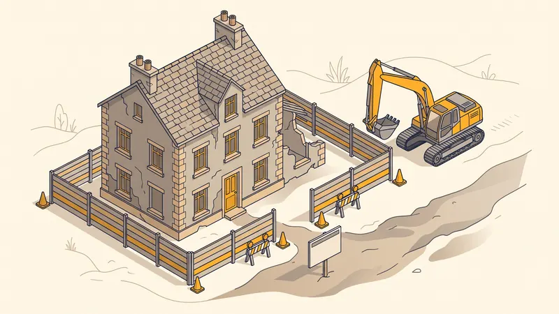

Permis de Démolir : Démarches, Délais & Documents 2026
Vous envisagez de démolir un bâtiment, un mur ou une construction à Aix-en-Provence ou dans les Bouches-du-Rhône ? Le permis de démolir est une autorisation d'urbanisme qui peut être obligatoire selon votre situation. Ce guide détaille les démarches à suivre, les documents à fournir et les délais d'instruction en 2026.

Quand le permis de démolir est-il obligatoire ?
Le permis de démolir n'est pas systématiquement requis. Son caractère obligatoire dépend de la localisation du bâtiment et des règles d'urbanisme locales :
Cas où le permis de démolir est obligatoire
- Communes ayant instauré le permis de démolir : le conseil municipal peut, par délibération, imposer le permis de démolir sur tout ou partie de son territoire. C'est le cas d'Aix-en-Provence.
- Secteurs protégés : périmètre des Architectes des Bâtiments de France (ABF), sites inscrits ou classés, réserves naturelles, secteurs sauvegardés.
- Bâtiments inscrits ou classés au titre des monuments historiques.
- Bâtiments identifiés comme à protéger dans le PLU (Plan Local d'Urbanisme).
Cas où le permis n'est pas nécessaire
- Démolition ordonnée par le juge ou par l'autorité administrative pour cause de sécurité (péril imminent).
- Démolition de bâtiments menaçant ruine faisant l'objet d'un arrêté de péril.
- Démolitions liées à des opérations de restauration immobilière faisant l'objet d'une DUP.
- Dans les communes n'ayant pas instauré le permis de démolir (hors secteurs protégés).

Les formulaires Cerfa à utiliser
Permis de démolir seul : Cerfa n°13405*11
Ce formulaire est utilisé lorsque vous souhaitez uniquement démolir un bâtiment sans construire à la place. Il se compose de 8 pages et doit être rempli en 4 exemplaires minimum (plus des exemplaires supplémentaires selon les consultations).
Permis de construire incluant une démolition : Cerfa n°13406*11
Si votre projet inclut une démolition suivie d'une construction, vous n'avez pas besoin de déposer deux demandes distinctes. Le formulaire de permis de construire comporte une section dédiée à la démolition. C'est la procédure la plus courante dans les projets de reconstruction.
Les documents à fournir
Le dossier de demande de permis de démolir comprend les pièces suivantes :
| Pièce | Description | Obligatoire |
|---|---|---|
| PD1 - Plan de situation | Localisation du terrain dans la commune | Oui |
| PD2 - Plan de masse | Plan du terrain avec le bâtiment à démolir | Oui |
| PD3 - Document photo | Photos du bâtiment et de son environnement | Oui |
| PD4 - Notice descriptive | Description des travaux de démolition envisagés | Oui (secteur protégé) |
| Diagnostic amiante | Repérage amiante avant démolition (DAD) | Oui (bâtiments avant 1997) |
Le diagnostic amiante avant démolition (DAD)
Le diagnostic amiante avant démolition est obligatoire pour tout bâtiment dont le permis de construire a été délivré avant le 1er juillet 1997. Cette date correspond à l'interdiction de l'amiante en France. Le diagnostic doit être réalisé par un diagnostiqueur certifié avec mention.
Le DAD est plus poussant que le simple diagnostic amiante de vente. Il implique des sondages destructifs dans les matériaux et revêtements du bâtiment. En cas de présence d'amiante, un plan de retrait doit être élaboré et les travaux de désamiantage réalisés par une entreprise certifiée avant la démolition.
Dans les Bouches-du-Rhône, de nombreux bâtiments construits dans les années 1960-1990 contiennent de l'amiante (toitures en fibrociment, dalles de sol, flocages). Le coût du diagnostic varie de 500 à 2 000 euros selon la taille du bâtiment.
Autres diagnostics obligatoires avant démolition
- Diagnostic plomb (CREP) : obligatoire pour les bâtiments construits avant 1949.
- Diagnostic termites : obligatoire dans les zones déclarées par arrêté préfectoral. Les Bouches-du-Rhône sont en partie concernées.
- Diagnostic déchets : depuis le 1er juillet 2023, un diagnostic portant sur les produits, matériaux et déchets issus de la démolition est obligatoire pour les bâtiments de plus de 1 000 m².
Délais d'instruction et procédure
Dépôt du dossier
Le dossier est déposé en mairie (service urbanisme) en 4 exemplaires minimum. À Aix-en-Provence, le dépôt peut également se faire en ligne via le guichet numérique de la ville. Un récépissé de dépôt vous est remis avec la date à laquelle les travaux pourront commencer en l'absence de réponse.
Délais d'instruction
- 2 mois en cas de permis de démolir seul.
- 3 mois si le terrain est situé dans le périmètre d'un monument historique ou en secteur protégé (consultation ABF).
- 5 mois si le bâtiment est un immeuble de grande hauteur (IGH) ou un établissement recevant du public (ERP).
Le silence de l'administration au-delà du délai d'instruction vaut acceptation tacite (sauf cas particuliers).
Affichage et délai de recours
Une fois le permis obtenu, il doit être affiché sur le terrain de manière visible depuis la voie publique pendant toute la durée des travaux et pendant un minimum de 2 mois. Un délai de recours de 2 mois court à compter de l'affichage. Il est recommandé de faire constater l'affichage par un huissier.
Coût d'un permis de démolir
Le dépôt d'un permis de démolir est gratuit. Aucune taxe n'est perçue par la mairie. En revanche, des frais annexes sont à prévoir :
- Diagnostic amiante : 500 à 2 000 €
- Diagnostic plomb : 150 à 300 €
- Plan de situation et plan de masse : 100 à 300 € (si réalisés par un géomètre)
- Constat d'huissier pour l'affichage : 200 à 400 €
Démolition sans permis : quels risques ?
Démolir sans permis dans une zone où il est obligatoire constitue une infraction au Code de l'urbanisme. Les sanctions sont sévères :
- Amende pouvant atteindre 6 000 euros par m² de surface démolie.
- Obligation de reconstruire à l'identique à vos frais.
- Poursuites pénales devant le tribunal correctionnel.
STP Terrassement : votre partenaire démolition
Spécialisés dans la démolition à Aix-en-Provence et dans les Bouches-du-Rhône, nous prenons en charge l'ensemble de votre projet : assistance aux démarches administratives, coordination des diagnostics, démolition mécanique ou manuelle, tri et évacuation des déchets vers des centres agréés, terrassement du terrain après démolition.
Notre équipe intervient sur tous types de bâtiments : maisons individuelles, garages, murs de clôture, piscines, bâtiments commerciaux. Chaque chantier fait l'objet d'un plan de prévention et d'une gestion rigoureuse des déchets conformément à la réglementation PACA.
Projet de démolition ?
Obtenez un devis gratuit et personnalisé pour votre projet de démolition à Aix-en-Provence et dans les Bouches-du-Rhône.